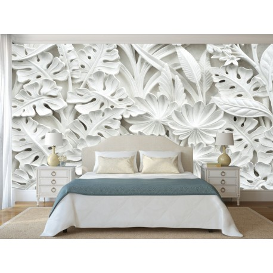

tapetas.lt – Stilingi tapetai Jūsų namams tiesiai iš gamintojo geriausiomis kainomis.
 0 Pagrindinis Naujienos Kolekcijos Tapetai Fototapetai 3D Gamta Kraštovaizdžiai Miestai Gyvūnai Jaunuolio Vaikiški Žemėlapiai (Naujiena) Tapetai Klasikiniai Provanso Skandinaviški Modernūs Šiuolaikiniai Jaunuolio Vaikiški Dekoratyvinės panelės Klijai Flizelino Popieriaus Prekiniai ženklai Roberto Cavalli Trussardi Gianfranco Ferré Home Versace Valentin Yudashkin Arthouse Lamborghini Blumarine Colani Akcijos Mūsų salonai 0 was successfully added to your cart.Krepšelis
Tapetas.lt
Stilingi ir prabangūs tapetai
Rinktis tapetus Peržiūrėti kolekcijasFototapetai
Įkvėpk namams gyvybės
RinktisVaikiški fototapetai
Spalvingas ir linksmas mažųjų pasaulis
Rinktis3D Fototapetai
Išskirtinumas interjere
RinktisRoberto Cavalli Home No 7
Lamborghini
Gianfranco Ferré Home No 2
Versace-III
Kokybiški Fototapetai
Suteikite savo sienoms nuotaiką
129.00 € Dekoras , FototapetaiWorld Graphic 2
Į krepšelį 129.00 € Dekoras , FototapetaiWorld Graphic 1
Į krepšelį 129.00 € Dekoras , FototapetaiHemispheres 2
Į krepšelį 129.00 € Dekoras , FototapetaiHemispheres 1
Į krepšelį Žiūrėti visusKlasikiniai Tapetai
Visada madinga klasika
114.00 € Klasikiniai , TapetaiCarrara 2 83603
Į krepšelį 114.00 € Klasikiniai , TapetaiCarrara 2 83653
Į krepšelį 114.00 € Klasikiniai , TapetaiValentin Yudashkin 82129
Į krepšelį 107.00 € Klasikiniai , Šiuolaikiniai , TapetaiGIANFRANCO FERRE HOME 2 61046
Į krepšelį Žiūrėti visusModernūs Tapetai
Mada ir stilius Jūsų namams
107.00 € Modernūs , TapetaiLamborghini 44810
Į krepšelį 40.00 € Modernūs , TapetaiDaniel Hechter 362625
Į krepšelį 40.00 € Modernūs , TapetaiDaniel Hechter 361333
Į krepšelį 42.00 € Modernūs , TapetaiCasual 30439
Į krepšelį Žiūrėti visus Populiariausi
Fototapetai ir Tapetai
Originalus sprendimas Jūsų namams
34.00 € Tapetai , VaikiškiBaby Landia 5411
Į krepšelį 24.00 € – 355.00 € 3D , Fototapetai , MiestaiFototapetas 10415
Pasirinkti savybes 61.00 € Modernūs , TapetaiColani Evolution 56332
Į krepšelį 24.00 € – 355.00 € 3D , FototapetaiFototapetas 3D 10141
Pasirinkti savybes Žiūrėti visusNaujienos
Aistra tapetams ir stiliui
0 0 Uncategorized“Carrara 2” įspūdingas marmuro grožis Jūsų namų interjere
Carrara marmuras yra vienas vertingiausių marmurų pasaulyje: Mikelandželas asmeniškai vyko į karjerus, kad atsirinktų blokus,… Skaityti daugiau 0 0 NaujienosETRO II tapetų kolekcija
ETRO pristato savo naują sienų dangų kolekciją, sukurtą bendradarbiaujant su „Rasch“ - vienu garsiausių Vokietijos… Skaityti daugiau 0 0 Naujienos„Komar“ „Stefan Hefele Ed2“ fototapetų kolekcija
⚜️ Naujoji „Komar“ „Stefan Hefele Ed2“ kolekcija suteikia galimybę patekti į kvapą kniaužiančias pasaulio vietas!… Skaityti daugiauVilniuje
Prekybos centras “Domus Galerija“
Salonas Ugnis gyvenimui
P.Lukšio g. 32, Vilnius
I V: 10-19
VI: 10-18
VII: nedirbame
Kaune
Namų idėjų centras “NIC”
Pramonės pr. 8E, Kaunas
I-V: 10-19
VI: 10-16
VII: nedirbame
Klaipėdoje
Prekybos centras ”Smiltė”
Baltijos pr. 6A, Klaipėda
I-V: 10-19
VI: 10-16
VII: nedirbame
Klientų aptarnavimas
Mūsų salonai Pirkimo taisykės ir sąlygos Privatumo politika Atsiskaitymo būdai Pristatymas Grąžinimo tvarka Patarimai© 2020 tapetas.lt. Visos teisės saugomos.
Pagrindinis Naujienos Kolekcijos Tapetai Fototapetai 3D Gamta Kraštovaizdžiai Miestai Gyvūnai Jaunuolio Vaikiški Žemėlapiai (Naujiena) Tapetai Klasikiniai Provanso Skandinaviški Modernūs Šiuolaikiniai Jaunuolio Vaikiški Dekoratyvinės panelės Klijai Flizelino Popieriaus Prekiniai ženklai Roberto Cavalli Trussardi Gianfranco Ferré Home Versace Valentin Yudashkin Arthouse Lamborghini Blumarine Colani Akcijos Mūsų salonai